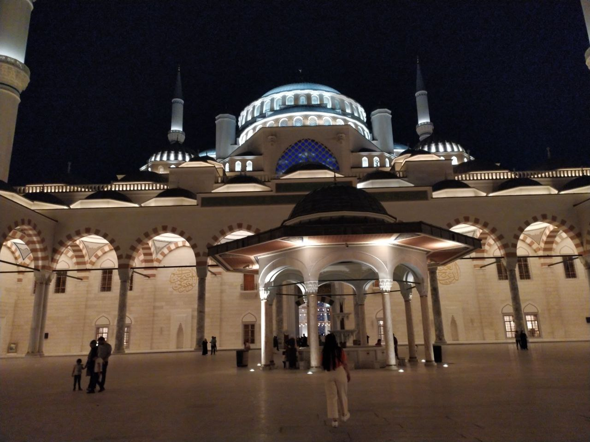

Çamlıca Cami

Çamlıca Camii, Türkiye'nin İstanbul şehrinde yer alan bir camidir.
Çamlıca, Üsküdar'da yapımına 29 Mart 2013'te başlanan ve 3 Mayıs 2019'da açılışı yapılan
cami, cumhuriyet tarihinin en büyük camisidir.
63 bin kişi kapasiteli ve 6 minareli cami 57 bin 500 metrekarelik alana
sahiptir
Çamlıca Camii'nin tasarım planlamasına Hayriye Gül Totu ve Bahar Mızrak yapmıştır. Kadın
mimarlar, camiyi 63.000 kişinin aynı anda ibadet edebileceği gibi tasarlamış ve kadınların daha
rahat ibadet edebilmesi için de planlamalar yapmıştır. Çamlıca Camii'nin genel tasarım anlayışı,
Mimar Sinan'ın klasik Osmanlı-İslam mimarisindedir. Projenin tasarımcıları, aynı zamanda deprem
olasılığını da düşünmüş ve bir doğal afet anında cami içerisinde 100.000 kişinin bulunabileceği
şekilde projelendirme yapmışlardır.
Caminin dışı, Mimar Sinan'ın eserlerinden oldukça esinlenerek tasarlanmış, yapımında da
Sinan'ın teknikleri kullanılmıştır.
Cami içerisindeki süslemeler minimalist bir anlayışla tasarlanmıştır. Caminin genelinde
insanları cami içerisinde fiziksel büyüklükten bunaltmamak, daha ruhani
duygular yaşatmak için ışık, renk, cam, süsleme ve hat sanatı kullanılmıştır
Sultanahmet Cami

Cami mavi, yeşil ve beyaz renkli İznik çinileriyle bezendiği için ve yarım kubbeleri ve
büyük kubbesinin içi
de yine mavi ağırlıklı kalem işleri ile süslendiği için Avrupalılarca "Mavi Camii (Blue Mosque)"
olarak
adlandırılır. Ayasofya'nın 1935 yılında camiden müzeye dönüştürülmesiyle, İstanbul'un ana camii
konumuna
ulaşmıştır.
Bu külliye bir cami, medreseler, hünkar kasrı, arasta, dükkânlar, hamam, çeşme, sebiller, türbe,
darüşşifa, sıbyan mektebi, imarethane ve kiralık odalardan oluşmaktadır. Bu yapıların bir kısmı
günümüze ulaşamamıştır.
Sultan Ahmet Camii'nin tasarımı Osmanlı cami mimarisi ile Bizans kilise mimarisinin 200 yıllık
sentezinin zirvesini oluşturur. Komşusu olan Ayasofya'dan bazı Bizans esintileri içermesinin yanı
sıra geleneksel İslami mimari de ağır basar ve klasik dönemin son büyük camisi olarak
görülür.
Eyüp Sultan Cami

Eyüp Sultan Camii, İstanbul'da Eyüpsultan semtinde Haliç kıyısında bulunan cami, olmasının
ötesinde kutsal bir ziyaret yeridir. Cami, Eyüp Sultan Külliyesi'nin bir bölümünü
oluşturmaktadır
Eyüp Sultan Türbesi'nin karşısında bulunan Eyüp Sultan Camii, dikdörtgen planda, mihrabı
çıkıntılıdır. Merkez kubbe altı sütun ve iki filayağına müstenit kemerlere yaslanır, etrafında yarım
kubbe, ortasında Eyüp Sultan türbesi, sandukasının ayak ucunda bir pınar, avlu ortasında asırlık bir
çınar bulunmaktadır.
Dış avlunun caddeye açılan iki kapısı vardır. İç avlu 12 sütuna müstenit 13
kubbelidir.Avlunun ortası şadırvandır. Türbe tek kubbeli, 8 köşelidir. Türbe methalinde nakşı
kademi saadet, sağında sebil bulunur.Mihrab eyvandır, minber mermerdir. Mihrab tarafı hariç üç tarafı galerilidir. Son cemaat yeri
önünde 6 sütunlu ve 7 kubbeli bir revak vardır.
Caminin dış avlusunda sebil bulunmaktadır. Üç pencerelidir. Bayramlarda ve özel günlerde
şerbet dağıtıldığı için şerbethane denilmiştir. Ayrıca cami bulunduğu Eyüpsultan ilçesinin
sembolü olmasıyla belediyenin logosunda yer almaktadır. Belediye logosunda zaman zaman
değişiklikler yapılmıştır fakat, logodaki tek sabit kalan şey Eyüp Sultan Camii
silüetidir.
Eyüp Camii civarında Fatih Sultan Mehmed'in yaptırdığı imarette günde iki kere yemek
pişirilirdi. Normal günlerde pirinçli, buğdaylı yemek çıkarken Ramazan ayında etli yemek
dağıtılırdı. Özel günlerde, cuma ve kandillerde, zerde ve zerbaç, pilav çıkarılıp yoksullara
verilirdi.